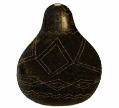
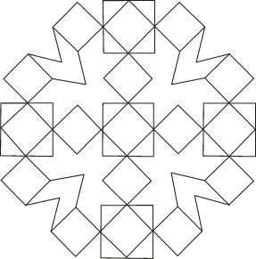

Simple decorative drawing
Simple decorative drawing is any simple artwork created to give a creative and uniquely attractive appearance to an area. The area can be any surface such as on paper, on skin, on fabric, on various structures and object found in various location, gardens and, opens which can be decorated. The artist can use various drawing materials and equipment to make decorative drawings. There are several motifs an artist can use to create simple decorative drawings, some of which are, lines, geometrical, floral fish, birds, animals, and abstract shapes as detailed below:
Simple decorative drawing of geometrical shapes
These are simple decorative drawings that are created by using various geometric shapes such as circles, rectangles, triangles or angles. The drawings can be done on a variety of surfaces such as on paper, on fabrics or on other places. The geometrical images can be used to decorate various places including objects, homes, hotels, business areas, schools, and public venues. The decorated object, can be kept as a decorative item in various places. Figure 2.28 shows a simple decorative geometrical drawing on a gourd and a simple decorative drawing of geometrical shapes.


Simple decorative drawing of lines
These are decorative drawings that can be done on various places such as on paper, on fabrics or on other places by using different lines. An artist can use all types of lines to create decorations for any particular place. Figure 2.29 shows a variety of lines an artist can use to make line decorations and Figure 2.30 and Figure 2.31 are more examples of simple decorations drawings made by using lines.